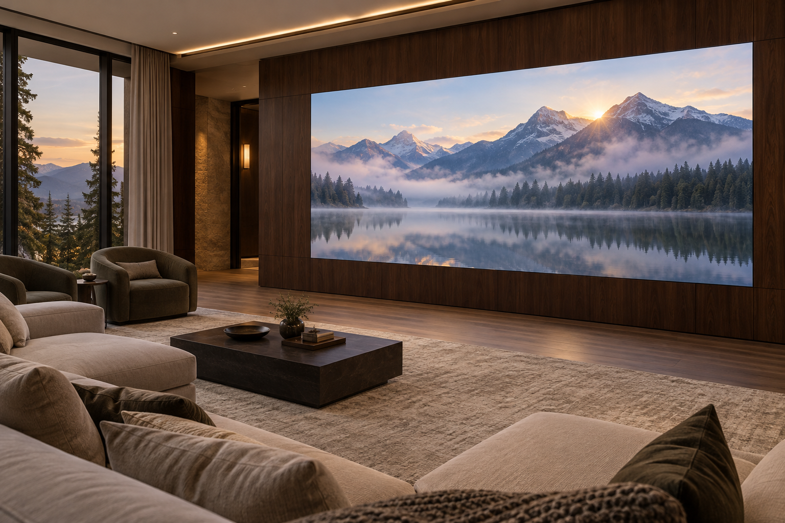
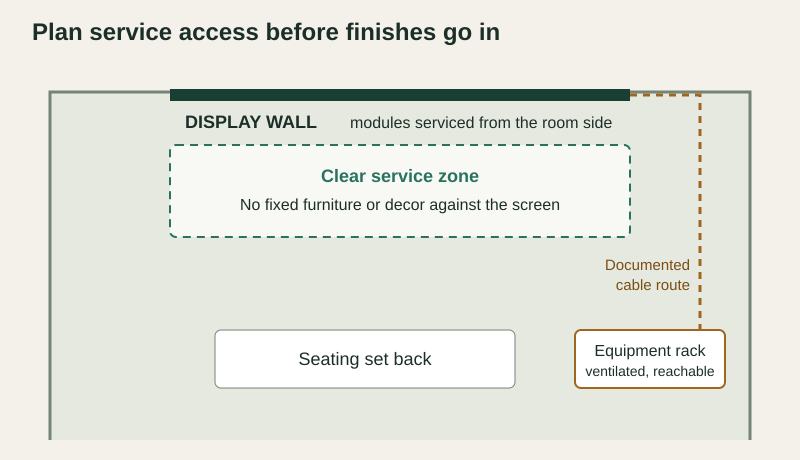
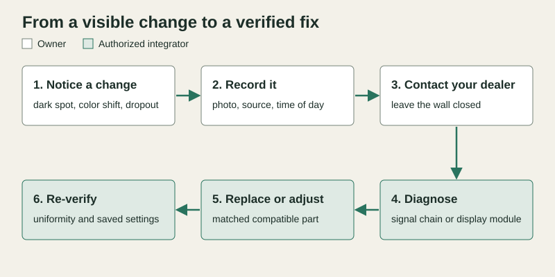

Maintaining a residential MicroLED video wall is mostly a planning job. The owner keeps the screen clean using the documented care method, watches for visible changes and calls the dealer. The authorized integrator keeps matched spare modules and configuration records, diagnoses problems, replaces parts from the room side and verifies the picture afterward. Our cabinets are engineered for front access, with eight magnetically mounted modules per cabinet, so a single module can be serviced without opening the wall behind it. The plan works best when access, spares and records are agreed before the millwork and finishes go in.
Agree who maintains what
Long-term ownership goes smoothly when every recurring task has a named owner. Use this matrix at design review and again at handover, and keep a copy with the home’s other system documentation.
| Item | What the owner does | What the integrator does |
|---|---|---|
| Room-side access | Keeps the area in front of the screen free of fixed furniture and decor. | Confirms the service method and working clearance for the supplied system. |
| Spare modules | Stores labeled spares in the agreed dry, conditioned location. | Supplies compatible spares and records which system they belong to. |
| Wall map and settings | Keeps the handover record with the home’s documentation. | Records the module layout, processor configuration and calibration files, with a backup copy. |
| Cleaning and care | Cleans the surface only with the method in the supplied care instructions. | Provides those instructions at handover and updates them when anything changes. |
| Image checks | Reports a visible change with a photo, the source playing and the time. | Reviews the report and schedules an inspection. |
| Diagnosis and repair | Leaves modules, cabinets and equipment closed. | Isolates the signal chain or module, replaces or adjusts the part and logs the work. |
| Calibration | Reviews the picture with the dealer after service. | Matches a replacement to its neighbors and verifies uniformity before closing the visit. |
Plan service access before the room is finished
Front access is what lets a MicroLED wall sit flush in millwork. Our cabinets are engineered so modules come off the room side of the wall, and each module is held in place magnetically. A technician still needs a clear working area in front of the screen and a reachable path to the equipment that drives it.
Confirm the exact service method for the supplied system during design, including where power, processing and network equipment will live. Avoid built-ins, shelving or decor fixed against the screen face. Keep the equipment rack ventilated and reachable without moving finished panels, and document the cable route between the wall and the rack so later work follows the same path.

Our guide to specifying MicroLED early with architects and designers covers the construction drawings. The maintenance rule is simpler: everything the service plan depends on should remain reachable after the room is finished.
Keep matched spares and a complete record
A replacement module needs to sit comfortably beside its neighbors in color and brightness, and the processor needs to know where every module sits. Ask your dealer to supply compatible spare modules with the installation and to label them with the system they belong to. Store them in a dry, conditioned place in the home or with the dealer, whichever you agree.
The handover record should include the wall map, processor configuration, calibration files and the firmware versions in use, with a backup copy held by the dealer. These records let a technician restore the agreed picture after a repair or an equipment change. CEDIA’s guidance on organising project details to improve service explains why organized project records matter for later service work.
Everyday care for the screen surface
Our panel surface is dustproof, moisture-proof and rated for 4H hardness, and it is designed to be cleaned. Use the cleaning method, materials and power state described in the supplied care instructions. Keep household cleaners and spray bottles away from the screen unless those instructions allow them.
Dust settles on any large surface. A light routine cleaning, done the documented way, keeps the picture clear without a service visit. Anything that does not wipe away is worth a photo and a call to the dealer.
From a visible change to a verified fix
Owners notice changes first because they watch the wall every day. A single dark or bright pixel, a block that looks different from its neighbors, a color tint along a seam, or a picture that drops out on one source are all worth reporting. The useful owner action is to record the change and leave the wall and its equipment closed.

Some visible symptoms start in the signal chain, so diagnosis begins with the source, switching and processor before any module comes off. Our guide to the video processing chain behind a MicroLED wall explains how those parts connect. Where a module is the cause, the technician replaces it from the room side, logs its position and checks the result in the same visit whenever the spare and the records are ready.
Calibration after a replacement
A new module can differ slightly from modules that have been operating for years. The integrator brings the replacement into line with its neighbors and confirms uniformity across the wall before closing the visit. On our Onyx Series, NanoPix provides pixel-level calibration and uniformity correction. With our other series, ask the dealer which calibration process applies to the supplied system and how the result is recorded.
Lifetime ratings describe the long-term light output of the LEDs themselves. A support plan covers everything else the wall depends on: access, parts, records, equipment and calibration. Our article on what MicroLED longevity really means at home explains the ratings, and this guide covers the plan around them.
What the integrator is actually deciding
An authorized integrator turns these principles into a documented support plan for your home. The design review should settle these points:
- The service method and clear working zone for the supplied system.
- The equipment location, ventilation and cable route, recorded on the drawings.
- The quantity and storage location of compatible spare modules.
- The contents of the handover record and where backups are kept.
- The cleaning instructions given to the household.
- The process for reporting a visible change, including who to contact.
- The calibration method used after a replacement and how the result is recorded.
Bring these decisions into the project early. Planning the full scope of a video wall project includes the long-term support plan alongside the display itself.
Review the service plan before the room is finished
Share the room drawings, the proposed equipment location and how you plan to use the wall with an authorized Opal dealer. Ask them to walk you through access, spare modules, records and calibration for the system they will supply.
Find a Dealer to Plan Service